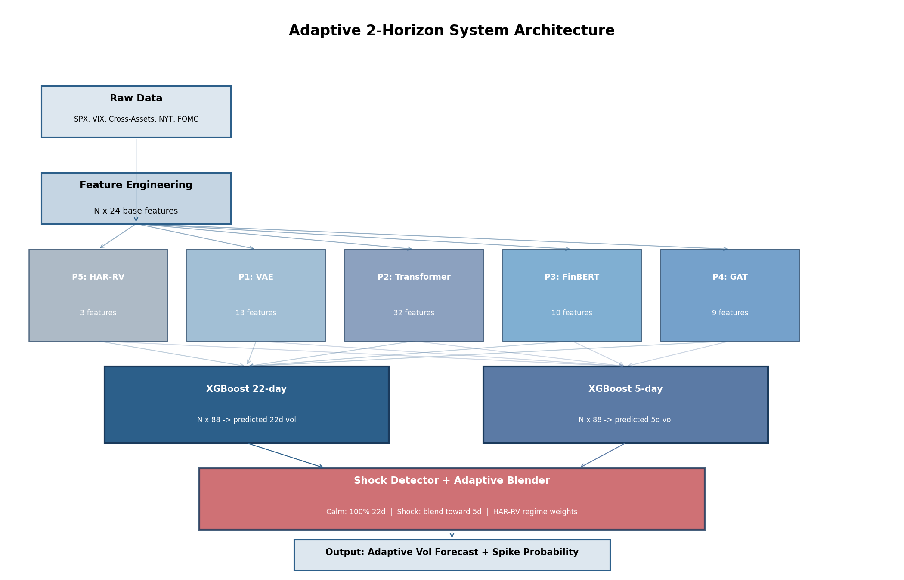
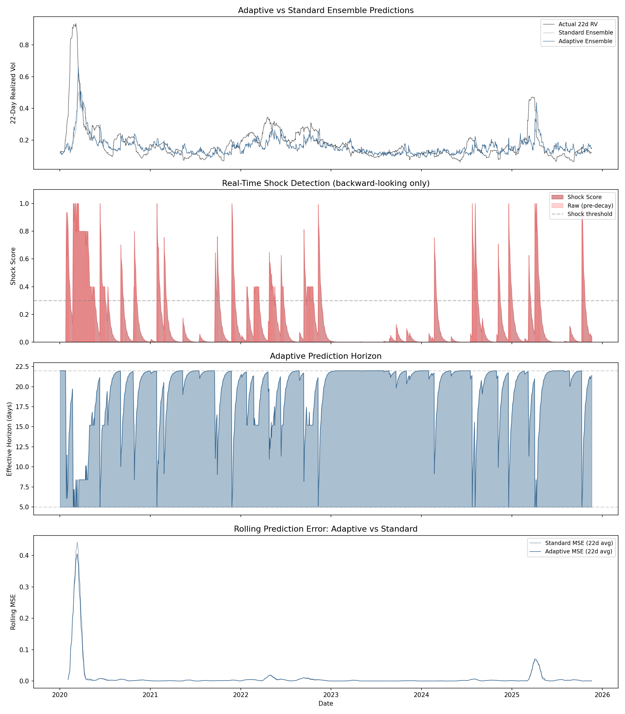
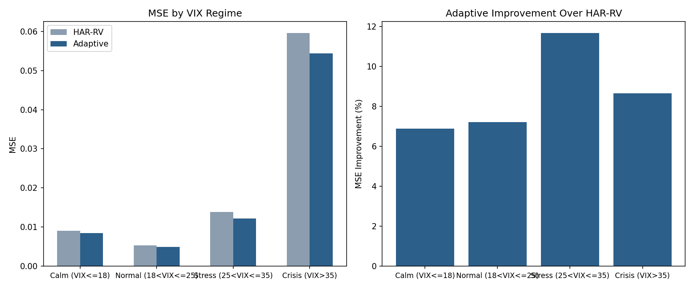
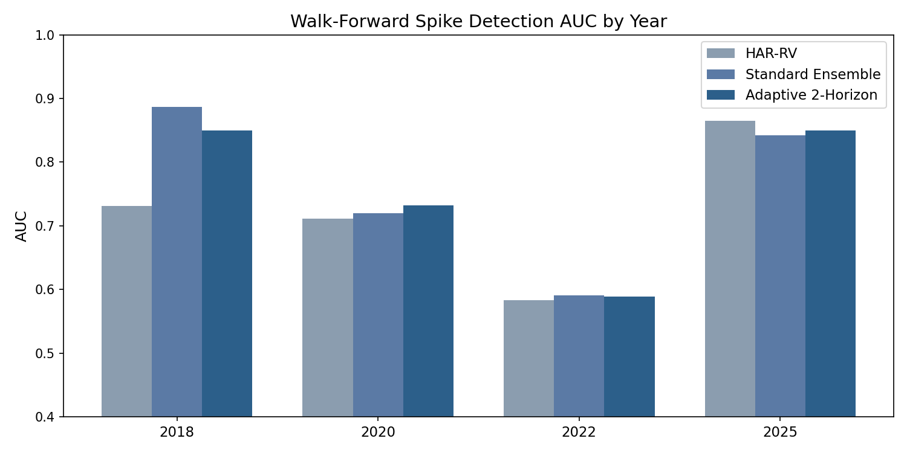
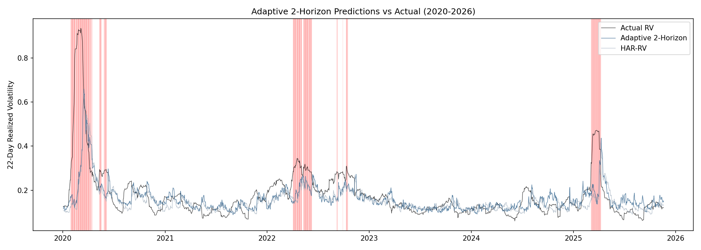
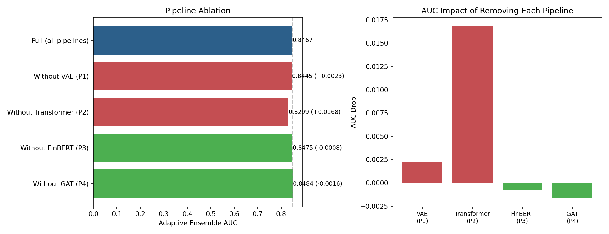
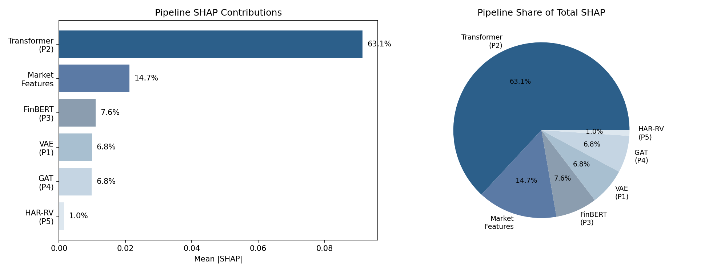

1. Introduction
Volatility — how much the stock market moves — matters a lot in finance. If the market drops 3% one day and bounces 2% the next, that's high volatility. If it drifts up 0.1% day after day, that's low volatility. Options contracts are priced based on expected future volatility, so if you can predict it more accurately than the market, you may have a useful risk-management or trading signal.
We predict 22-day forward realized volatility on the S&P 500 — essentially, how choppy will the market be over the next month? We frame this as both a regression problem (predict the exact level) and a classification problem (will there be a spike above the 90th historical percentile?).
Our system combines five specialized ML pipelines — a Transformer, an LSTM-VAE, a financial NLP model, a Graph Neural Network, and a classical baseline — fused by XGBoost with regime-conditional weighting. But our most impactful contribution turned out to be much simpler: an adaptive mechanism that shortens the prediction window during detected market shocks.
2. Related Work
2.1 The HAR-RV Benchmark
The model everyone measures against is HAR-RV (Heterogeneous Autoregressive Realized Volatility), introduced by Corsi in 2009. It's a linear regression on just three numbers: yesterday's volatility, last week's, and last month's. Three parameters. That's it.
Despite this simplicity, HAR-RV is incredibly hard to beat. Patton and Sheppard (2015) tested over 400 volatility forecasting models and found that sophisticated approaches rarely improved on HAR-RV by more than a few percent. Volatility is very persistent — if markets were choppy last week, they'll probably be choppy this week too. HAR-RV captures this so well that fancier models struggle to add anything without overfitting.
2.2 Machine Learning for Vol Forecasting
Recent work has begun chipping away at HAR-RV's dominance. Christensen, Siggaard, and Veliyev (2022) showed that ML models (including neural networks and XGBoost) can beat the HAR family, especially at longer horizons, attributing the gains to ML's ability to capture higher persistence in realized variance.
A 2025 study in MDPI FinTech compared five deep learning architectures against HAR across major U.S. indices, finding that while DL models can outperform HAR when augmented with macroeconomic variables, the margin of improvement varies considerably by horizon and index — underscoring that HAR remains a formidable baseline even against modern architectures.
Recent work (2025) has also applied Vision Transformers to implied volatility surfaces for realized vol prediction, treating the IV surface as an image — a creative approach that highlights how the field is experimenting with unconventional architectures.
Our work differs in two ways: (1) we combine multiple specialized pipelines rather than testing single architectures, and (2) we introduce adaptive horizon switching, which is different from the benchmark comparisons we studied.
3. Our Approach
Different things drive volatility — price patterns, what regime the market is in, news sentiment, how correlated different assets are. No single model captures all of these well. We built five specialized pipelines, each extracting a different type of signal from the data:

3.1 The Five Pipelines
Pipeline 2: Transformer Encoder (63% of the signal). This turned out to be the star. A 2-layer Transformer processes 60-day windows of 24 market features. Unlike LSTMs, which read data sequentially and tend to forget older information, the Transformer's self-attention mechanism can attend to any day in the window equally. If a shock from 45 days ago is still reverberating, the Transformer discovers this from data rather than assuming recent days always matter most. Output: 32-dimensional embedding per day.
Pipeline 1: Variational Autoencoder (regime detection). An LSTM autoencoder compresses 30-day sequences into an 8-dimensional latent space. Similar market conditions map to nearby points. When reconstruction error is high, the model flags unusual conditions. Output: 13 features including latent coordinates, anomaly scores, and regime transition speed.
Pipeline 3: FinBERT (news sentiment). ProsusAI/finbert — a BERT model fine-tuned on financial text — analyzes NYT financial headlines daily. The idea is that news carries forward-looking information that price data alone doesn't. A hawkish Fed speech shifts rate expectations before bond markets fully reprice. Output: 10 sentiment features. We switched from an earlier Claude API approach to FinBERT for full reproducibility — no API key needed, deterministic output.
Pipeline 4: Graph Attention Network (cross-asset contagion). A GAT models relationships between 26 cross-asset ETFs (spanning bonds, commodities, FX, equities, and sectors) via their rolling correlation matrix. When cross-asset correlations spike, diversification is breaking down — a leading indicator of broad vol events. Output: 9 features.
Pipeline 5: HAR-RV (baseline). The 3-parameter linear regression described above. It serves dual duty: baseline for comparison and component of the ensemble — during crises, HAR-RV gets 70% weight because simplicity protects against overfitting to unprecedented events.
3.2 XGBoost Meta-Model
All 88 pipeline features feed into XGBoost (500 trees, depth 4). The final prediction blends XGBoost with HAR-RV using VIX-regime weights: during calm markets (VIX < 18), XGBoost gets 70%; during crisis (VIX > 35), HAR-RV gets 70%. We found that ML helps most in normal-to-elevated conditions, but during extreme events the simple persistence model is more reliable.
4. The Key Innovation: Adaptive Horizon
Here's the insight that drove our best results: the right prediction window changes with market conditions.
During normal markets, predicting the next 22 trading days makes sense — you're trading monthly options and vol is persistent. But during a sudden crash, the 22-day window includes both the crisis days and the recovery days that follow, smoothing out the spike. A 5-day window captures just the immediate crisis.
To see why this matters: if the market drops 4% today, that move is 20% of a 5-day window but only 5% of a 22-day window. The shorter window reacts much faster to regime changes.
We built a backward-looking shock detector that scores current market stress from 0 (calm) to 1 (extreme) based on four signals: whether yesterday's return was unusually large relative to the trailing 60 days, whether VIX jumped sharply, whether VIX is at a sustained high level, and whether recent 5-day vol is spiking. All signals use only past data — no future information.
The shock score decays exponentially (half-life = 5 trading days), preventing whiplash switching and reflecting the reality that uncertainty persists for several days after a shock.

5. Results
| Model | MSE | AUC | vs HAR-RV |
|---|---|---|---|
| HAR-RV (baseline) | 0.010660 | 0.8242 | — |
| Standard Ensemble (22d) | 0.010451 | 0.8439 | −2.0% |
| Adaptive 2-Horizon | 0.009757 | 0.8467 | −8.5% |
The Diebold-Mariano test yields p=0.13 — not significant at the conventional 5% level but approaching 10%. This is consistent with the broader literature: recent comparative studies have similarly found that outperforming HAR with formal statistical significance remains challenging, even when point estimates suggest meaningful improvement. The difficulty of achieving statistical significance against HAR-RV is a well-documented phenomenon in the field.
5.1 Regime-Specific Performance
The most compelling result: the adaptive model improves over HAR-RV in every VIX regime. The standard ensemble actually lost to HAR-RV during crisis (−7.9%), but the adaptive horizon fixes this by switching to 5-day predictions.

5.2 Walk-Forward Validation
Walk-forward validation trains on all data before each year and tests on that year, simulating real-world usage across different market regimes:


6. What Actually Matters? (Ablation)
We removed each pipeline one at a time. The results surprised us:

The Transformer is the only pipeline whose removal significantly hurts (AUC drops 0.017). Removing the VAE, FinBERT, or GAT actually slightly improves AUC. A simplified system using only Transformer + market features (56 features) outperforms the full 88-feature system.

This finding aligns with Christensen et al. (2022), who found that ML's advantage over HAR comes primarily from capturing higher persistence — exactly what the Transformer's attention mechanism excels at. The other pipelines attempt to add orthogonal information, but with only ~2,400 training days, the noise they introduce outweighs any marginal signal.
7. Limitations & Future Work
Statistical significance is borderline. The DM test at p=0.13 means we can't claim with high confidence that our improvement isn't luck. This is the fundamental challenge of vol forecasting — the strong persistence that makes HAR-RV so good also makes it hard to demonstrate that anything else is significantly better.
Small training set. With ~2,400 days of training data, our neural networks are parameter-rich relative to available samples. This likely explains why simpler models win and why the VAE/GAT add noise. As recent ViT-based volatility work also notes, financial data is inherently noisy and limited in scale compared to other ML domains.
Extreme events can't be predicted from history. Every model underestimates COVID-scale spikes because they're unlike anything in the training data. The adaptive horizon helps (faster recovery) but can't solve this fundamental limitation.
Future directions: Prediction market data (Kalshi) as an orthogonal crowd-wisdom signal, intraday data for higher-fidelity RV construction, learned shock detection thresholds via a separate classifier, and State Space Models (Mamba) for efficient long-sequence processing.
8. Implementation Notes
Some decisions and lessons from building this system that don't fit neatly into the sections above:
Train/test split: We split at January 1, 2020 — deliberately placing COVID at the start of the test set. This is the hardest possible test for a vol model trained on pre-pandemic data.
Leakage prevention: The spike threshold (90th percentile of forward vol) is computed from training data only. The VAE's crisis centroid excludes 2020+ years. The shock detector uses only backward-looking signals. We caught one leakage bug through SHAP analysis: P3 text features were accidentally capturing market features due to suffix-based column matching. Fixed with explicit column lists.
Scale: 88 features total (3 HAR-RV + 21 market + 32 Transformer + 13 VAE + 10 FinBERT + 9 GAT). The simplified model uses 56 features (dropping VAE, FinBERT, GAT) and performs better.
What failed: The VAE, FinBERT, and GAT pipelines all add noise rather than signal at ~2,400 training days. A neural cross-attention fusion model we tested as an alternative meta-model also underperformed XGBoost (AUC 0.73 vs 0.85) — it overfit after epoch 60 while training loss kept falling. These failures informed our final architecture more than the successes did.
FinBERT over Claude API: We originally used Claude's API for text analysis but switched to FinBERT for reproducibility. FinBERT produces identical output on every run, requires no API key, and actually performed slightly better (SHAP contribution went from 4.7% to 7.6%).
9. Conclusion
The main lesson from this project was that more model complexity did not automatically produce a better volatility forecast. The Transformer carried most of the predictive signal, while the VAE, FinBERT, and GAT features were useful mainly as a demonstration that ablation matters — they added more noise than signal at this data scale.
The adaptive horizon was the clearest improvement. Instead of always forecasting 22 days ahead, the model shortened its effective horizon during market shocks, which helped it respond faster during stress periods while preserving the monthly forecast during calmer regimes.
Overall, the final system improved MSE by 8.5% over HAR-RV and was consistent across VIX regimes, though the Diebold-Mariano test was not significant at the 5% level. The result is less "deep learning beats finance" and more modest: careful validation, ablation, and horizon design mattered more than adding more pipelines.